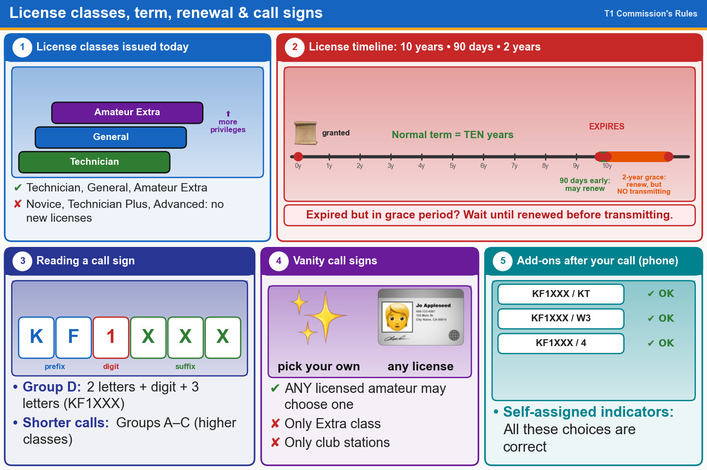

💡 10-year term • renew up to 90 days early • 2-year grace period, but no transmitting while expired.
Pick an answer for each question, then press Grade at the bottom.
T1C01[97.9(a), 97.17(a)]
For which classes of amateur radio licenses does the FCC currently issue new licenses?
✔A.Technician, General, Amateur Extra
✘B.Novice, Technician Plus, General, Advanced
✘C.Novice, Technician, General, Amateur Extra
✘D.Technician, Technician Plus, General, Amateur Extra
T1C08[97.25]
What is the normal term for an FCC-issued amateur radio license?
✔A.Ten years
✘B.Five years
✘C.Life
✘D.Eight years
T1C07[97.21, 1.949]
How long before the expiration date may an amateur radio license renewal be requested?
✔A.90 days
✘B.30 days
✘C.6 months
✘D.1 year
T1C09[97.21(a)(b)]
What is the grace period for renewal if an amateur license expires?
✘A.Five years
✘B.Three years
✔C.Two years
✘D.Ten years
T1C11[97.21(b)]
If your license has expired and is still within the allowable grace period, may you continue to transmit on the amateur radio bands?
✔A.No, you must wait until the license has been renewed
✘B.Yes, as soon as you apply for renewal
✘C.Yes, for up to one year
✘D.Yes, for up to two years
T1C05
Which of the following is a valid Group D call sign format for Technician class?
✘A.W1XX
✘B.KA1X
✔C.KF1XXX
✘D.All these choices are correct
T1C02[97.19]
Who may select a desired call sign under the vanity call sign rules?
✘A.Only a licensed amateur with a General or Amateur Extra Class license
✔B.Any licensed amateur
✘C.Only a licensed amateur with an Amateur Extra Class license
✘D.Only a licensed amateur who has been licensed continuously for more than 10 years
T1F06[97.119(c)]
Which of the following self-assigned indicators are acceptable when using a phone transmission?
✘A.KL7CC slant W3
✘B.KL7CC slash W3
✘C.KL7CC stroke W3
✔D.All these choices are correct